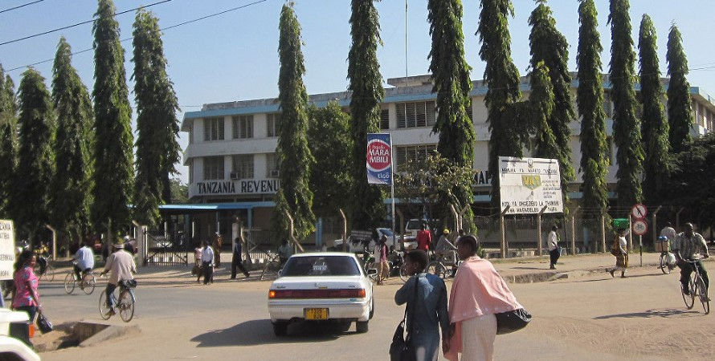
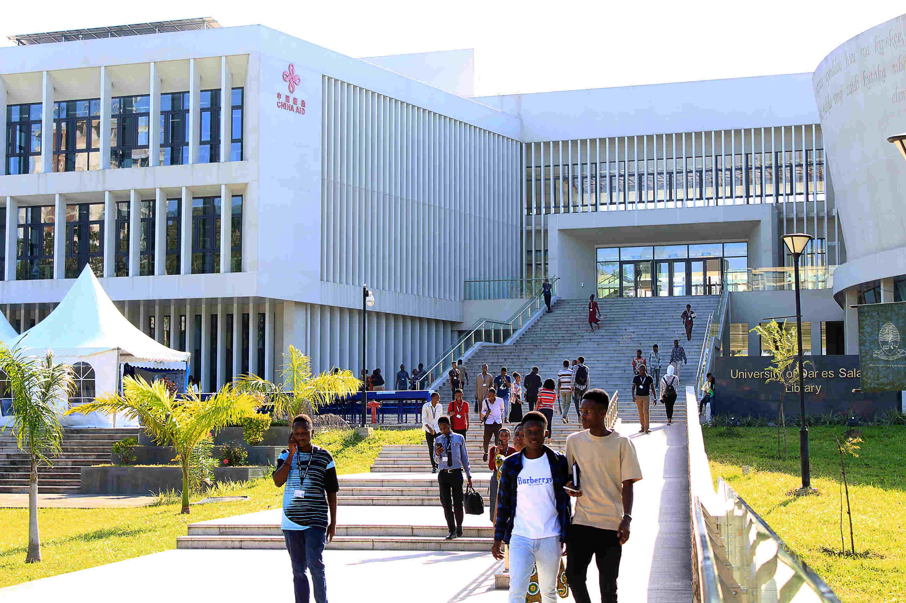
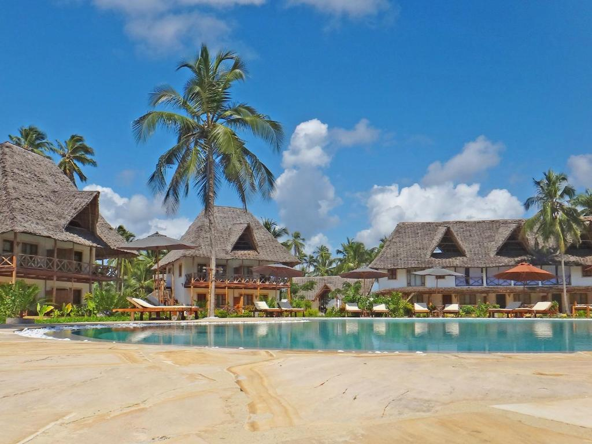
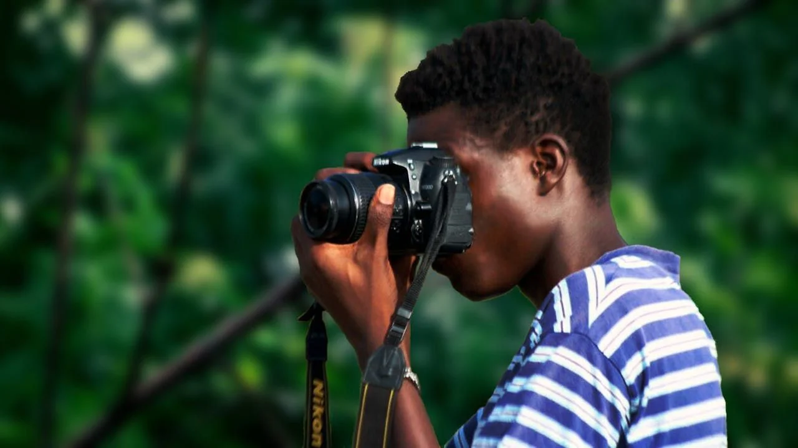

My name is MICHAEL, YUSUPH MASHAKA, and I am 23 years old. I am a Tanzanian student with a passion for Business, Economics, Data Analysis, and Information Technology. My journey combines academic excellence, practical work experience, and creative pursuits.

I was born in Tabora, Tanzania. Growing up here instilled discipline, resilience, and cultural values that continue to guide me. Tabora remains my home address, even as I balance life between Dar es Salaam and Zanzibar.

I am currently a student at the University of Dar es Salaam, pursuing a Bachelor of Science in Business Information Technology (BIT). This program allows me to merge business knowledge with IT skills, preparing me for roles in data management, analysis, and digital transformation. My academic journey has been marked by dedication, graduating Form Six in 2024 with Division One.

In Zanzibar, I work at Pongwe Bay Resort as a Store Keeper in inventory and procurement control. This role has given me hands-on experience in managing supplies, ensuring accuracy in data entry, and supporting business operations. It has strengthened my analytical skills and ability to adapt to real-world challenges.
I successfully completed JKT training, which enhanced my discipline, teamwork, and leadership abilities. This experience taught me resilience and practical skills that I apply in both academic and professional settings.

Photography is one of my creative outlets. I enjoy capturing landscapes, portraits, and events, especially in Zanzibar and Dar es Salaam. This hobby keeps me balanced and allows me to express creativity beyond academics and work.
Music inspires me and fuels my creativity. Whether listening or practicing instruments, it provides relaxation and artistic expression. It complements my professional and academic life, keeping me motivated and imaginative.